헤르메스는 뭐가 다른가요
영상은 완성된 모습부터 보여 줘요. 디스코드에서 "네가 만든 봇 몇 개 있어?"라고 물으면 헤르메스가 터미널 명령 hermes profile list를 직접 돌리고, 내 컴퓨터에서 도는 봇 프로필 목록을 돌려줘요. 화면 왼쪽에 ai-researcher, designer, editor, fact-checker, hackathon-scout처럼 역할 이름이 붙은 봇이 줄지어 있어요.
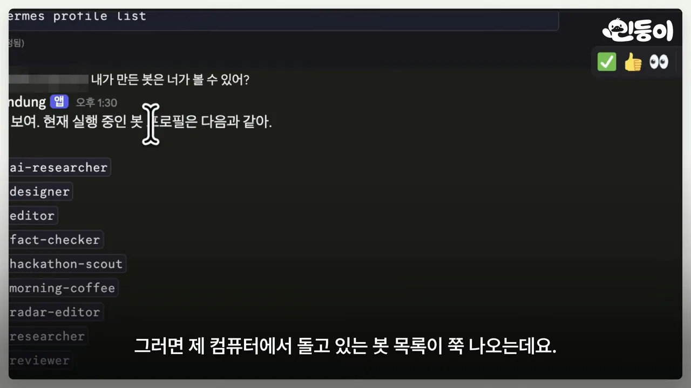
이 중 레이더 봇에게 일을 시키면 새 모델과 정책 소식을 링크까지 붙여 '오늘의 AI 레이더'로 정리해 오고, 참고 이미지를 주면 디자이너 봇이 카드뉴스 다섯 장을 뽑아 와요. 오늘 갈 길은 슬라이드의 네 칸 그대로예요. 설치하고, 봇 팀을 만들고, 메신저를 연결하고, 결과를 받아요.
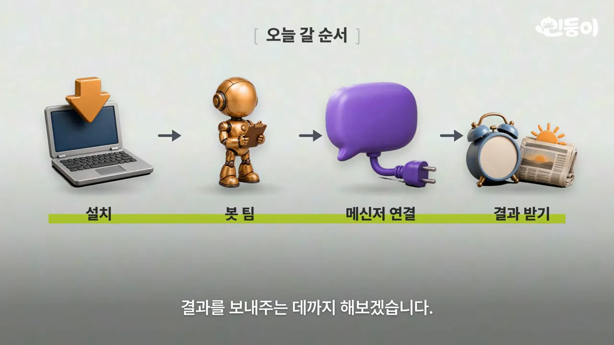
사서 쓰는 비서와 꾸려 쓰는 에이전트
요즘 일을 맡기는 AI 비서가 많아요. 영상은 그록 봇, 메타 뮤즈, 오픈AI 닷츠를 예로 들어요. 슬라이드 위쪽 제목이 '모델·서버'인 이유는 셋 다 그 회사 모델이 그 회사 서버에서 도는 서비스라서예요. 그중 그록 봇은 클라우드에 내 컴퓨터가 하나 생겨서 봇들이 거기서 24시간 같이 일하는 방식이에요. 발표자는 이런 서비스를 '사서 바로 쓰는 아이폰'에 비유해요.
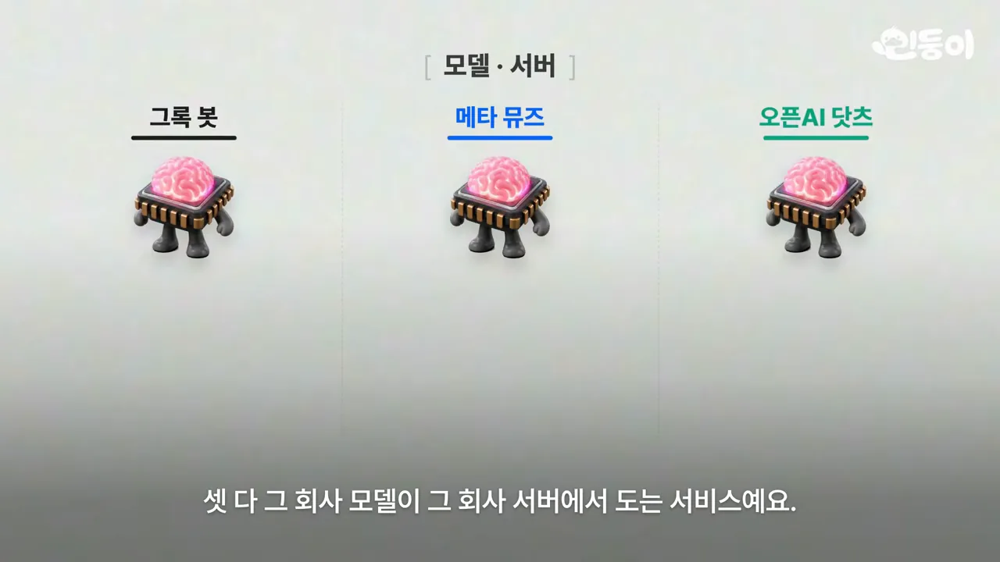
헤르메스 에이전트는 Nous Research가 만든 무료 오픈 소스예요. 화면의 공식 사이트에는 'THE AGENT THAT GROWS'라는 문구와 함께 저장소 주소 github.com/NousResearch/hermes-agent, 그리고 MIT(Massachusetts Institute of Technology) 라이선스라는 표시가 보여요.
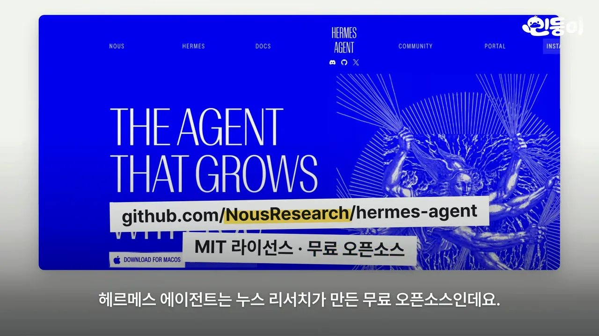
그래서 헤르메스는 그 위에 원하는 걸 깔아 쓰는 OS(Operating System)에 가까워요. 슬라이드 제목 '내가 꾸리는 것' 아래에 모델, 도구, 역할별 봇 세 가지가 나란히 놓여 있죠. 이 세 가지를 사람이 직접 고른다는 점이 앞의 서비스들과 달라요.
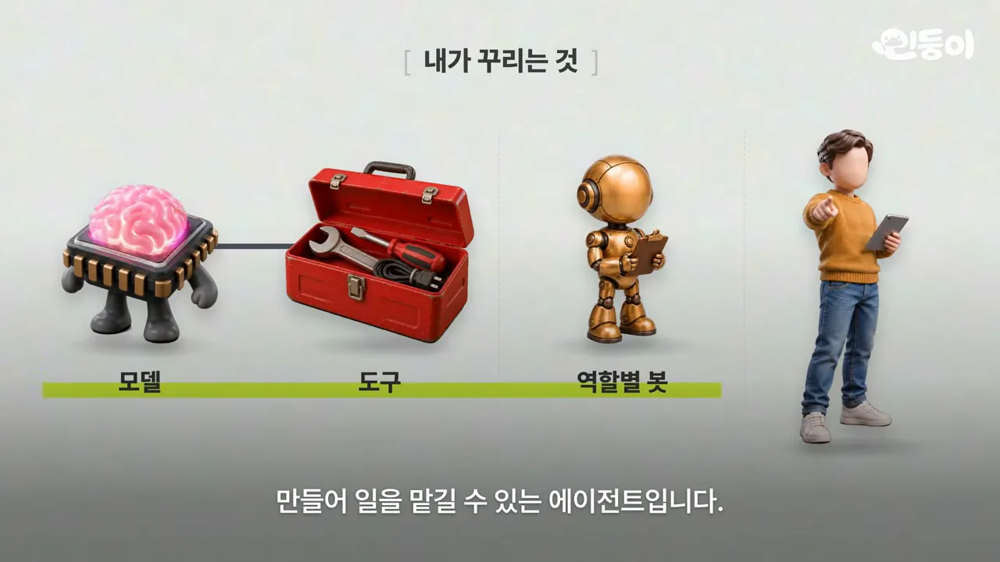
| 그록 봇 · 메타 뮤즈 · 오픈AI 닷츠 | 헤르메스 에이전트 | |
|---|---|---|
| 모델 | 그 회사 모델 | 내가 골라 연결(구독, API, 로컬 모델) |
| 도는 곳 | 그 회사 서버 | 내 컴퓨터나 내가 빌린 서버 |
| 비유 | 사서 바로 쓰는 아이폰 | 원하는 걸 깔아 쓰는 OS |
| 가격 | 서비스 요금 | 앱은 무료, 모델·도구 비용만 |
어디에 깔지도 정해야 해요. 계속 켜 두고 아침 보고까지 받으려면 월 5달러(약 7,000원) 정도의 작은 서버에 올리는 걸 권해요. 발표자는 일단 쓰던 맥에 깔았는데, 그러면 노트북을 덮는 순간 봇도 같이 잠들어요.
설치하고 구독으로 모델 붙이기
앱으로 깔기, 터미널로 깔기
설치는 공식 사이트 hermes-agent.nousresearch.com에서 시작해요. 맥용 다운로드를 눌러 받은 파일을 열면 'Install Hermes' 창이 뜨고, 왼쪽 Applications 폴더로 오른쪽 Hermes 아이콘을 끌어다 놓으면 끝이에요.
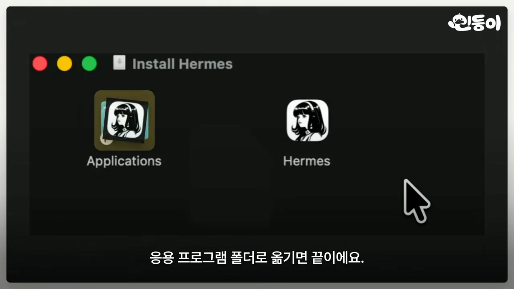
터미널이 편하면 설치 안내에 있는 명령 한 줄을 붙여 넣어도 돼요. 맥과 리눅스는 curl로 시작하는 줄, 윈도우는 PowerShell용 줄이에요. 터미널로 깔았어도 hermes desktop을 치면 같은 앱이 떠요. 앱과 터미널은 같은 에이전트를 다른 창으로 보는 것이라 설정, 기억, 스킬을 함께 써요. 뒤에서 메신저를 붙일 때는 터미널도 같이 써요.
계정을 따로 만들 필요도 없어서 앱을 열면 바로 첫 화면이 나와요. 입력창 오른쪽 아래에 버전이 작게 적혀 있는데, 발표자가 깐 것은 9월 24일에 나온 v0.21.5예요.
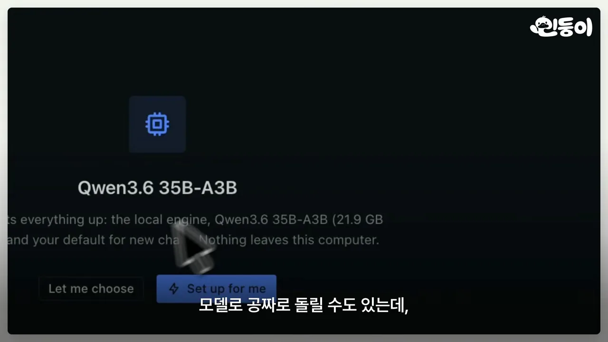
내 구독으로 모델 붙이기
헤르메스는 몸이고, 생각은 연결한 AI 모델이 해요. 그래서 앱은 무료이고 비용은 어떤 모델과 도구를 붙이느냐에 따라 달라져요. 컴퓨터 사양이 받쳐 주면 로컬 모델로 공짜로 돌릴 수도 있어요. 발표자는 이미 쓰던 ChatGPT 구독을 붙여요.
설정의 프로바이더(Providers) 화면을 보면 'Sign in with a subscription — no API key to copy'라는 칸이 있어요. API 키를 복사하지 않고 구독 계정으로 로그인하는 칸이에요. 그 아래 'ChatGPT or Codex Subscription' 줄 옆에 Connected 표시가 붙어 있죠.

- ChatGPT Codex 구독을 눌러요 — 브라우저가 열리고, 앱에는 9자리 코드가 떠요.
- 브라우저에서 내 ChatGPT 계정을 고르고 앱의 코드를 그대로 넣어요 — 계속을 누르면 'Codex에 로그인됨'이 떠요. 앱으로 돌아오면 '연결됨'과 함께 기본 모델이 잡혀 있어요
- 메인 모델을 골라요 — 따로 정하지 않은 일은 전부 이 모델이 맡아요.
목록에는 Nous Portal이나 Claude 같은 다른 구독도 있어요. 다만 붙는다고 다 구독료 안에서 쓰이는 건 아니에요. 슬라이드의 프로 요금제 그림에 빨간 X가 그어진 게 그 얘기예요. Claude 구독 로그인은 Max 요금제에 추가 사용량을 산 경우에만 되고, Pro 요금제로는 안 돼요.
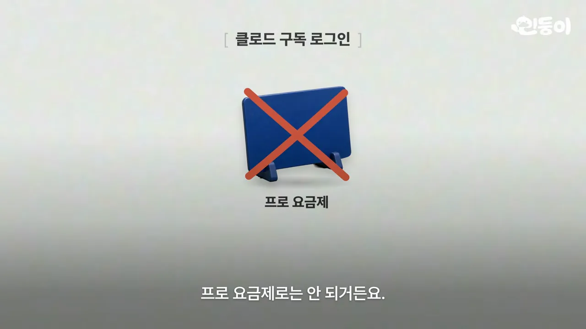
구독이 하나도 없다면 Nous Portal Plus가 있어요. 월 20달러(약 27,000원)에 22달러어치 크레딧을 줘요. 메인 모델로 발표자는 gpt-5.6-sol 계열을 골랐어요. 화면의 모델 목록에서 gpt-5.6-sol 근처를 가리키고 있죠. 토큰을 아끼면서도 웬만한 일은 무리 없이 해내는 모델이라는 이유예요.
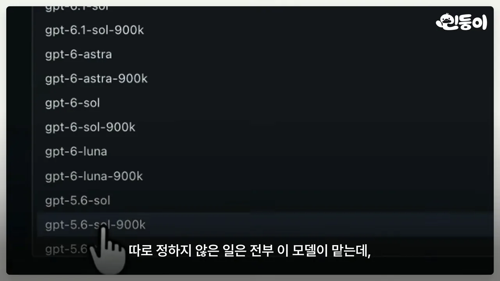
언어 설정 목록에 한국어가 있긴 하지만, 골라도 메뉴는 아직 영어 그대로예요. 대신 대화는 한국어로 문제없이 되니까 첫 대화에서 한국어로 해 달라고 말해 두면 돼요.
첫 대화: 손발, 기억, 스킬
발표자의 첫마디는 "안녕. 앞으로 나와 한국어로 대화해 줘. 현재 사용할 수 있는 기능을 아주 간단하게 설명해 줘"였어요. 화면을 보면 헤르메스가 한국어로 인사하고, 지금 할 수 있는 일을 글머리표로 정리해 줘요.
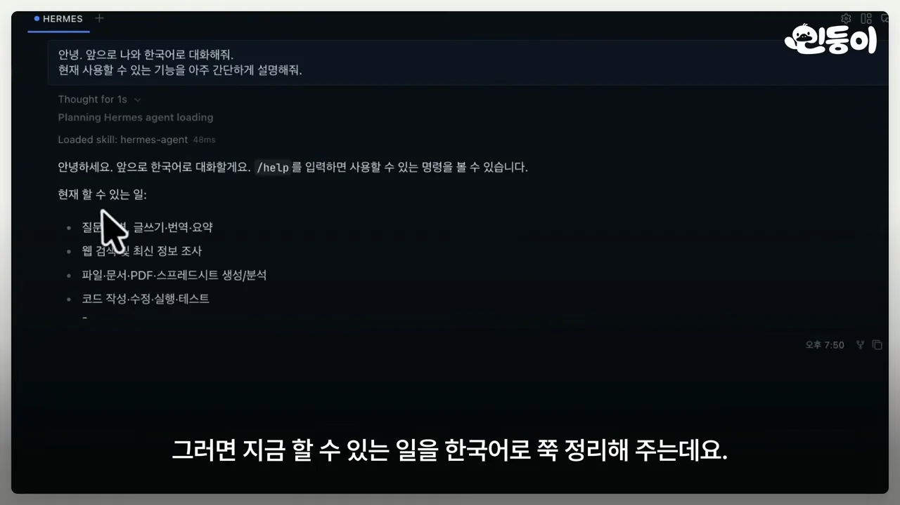
그 목록에 세 가지가 들어 있어요.
- 도구 — 웹 검색, 브라우저 조작, 터미널, 파일 편집, 이미지 만들기. 에이전트의 손발이에요.
- 기억 — 대화가 끝나도 남는 메모장 두 개를 헤르메스가 직접 고쳐 써요. 하나는 자기 일에 대한 메모, 하나는 사용자에 대한 메모예요.
- 스킬 — 일하는 방법을 적어 둔 문서예요. 기본 스킬이 여러 개 들어 있고 허브에서 더 받을 수도 있어요.
기억은 설정의 메모리 화면에서 둘 다 켜져 있는지 확인해요. 메모장에는 길이 제한이 있어요. 화면에 'Memory Budget 2200 · Profile Budget 1375'라고 두 숫자가 보이죠. 꽉 차면 헤르메스가 겹치거나 덜 필요한 메모를 합치거나 지워서 공간을 만들어요.
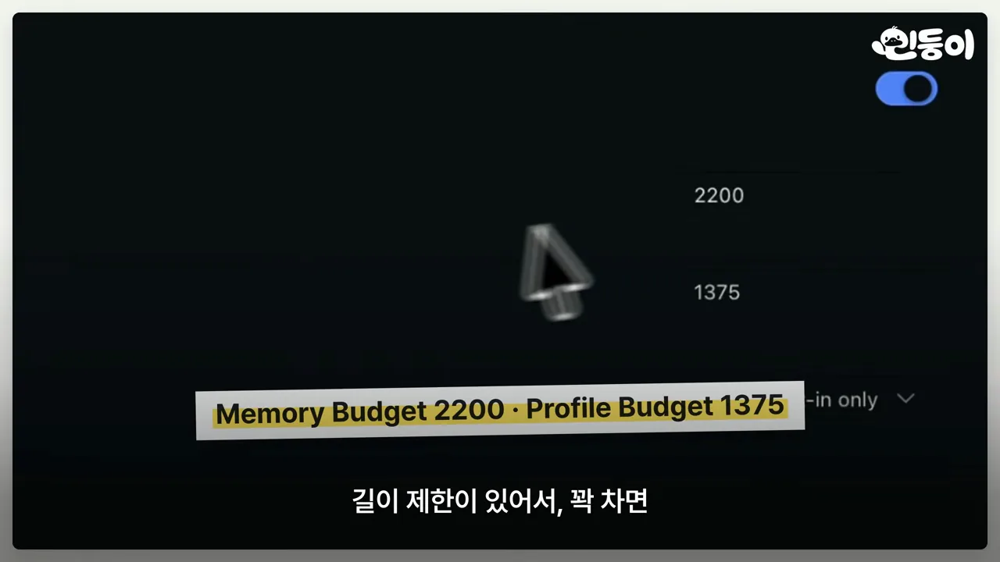
스킬에서 눈여겨볼 점은, 일하다 새로 익힌 방법을 에이전트가 스스로 스킬로 남긴다는 거예요. 그래서 쓸수록 내 방식에 맞춰져요. 기능 화면의 Plugins 탭을 보면 봇 기능도 기본으로 켜져 있어요. 화면 위쪽 Desktop 항목 설명에 '봇마다 대화창 하나, 아바타, 루틴, 그룹 채팅, 봇끼리 메시지'라고 적혀 있는데, 이게 다음 섹션의 주인공이에요.
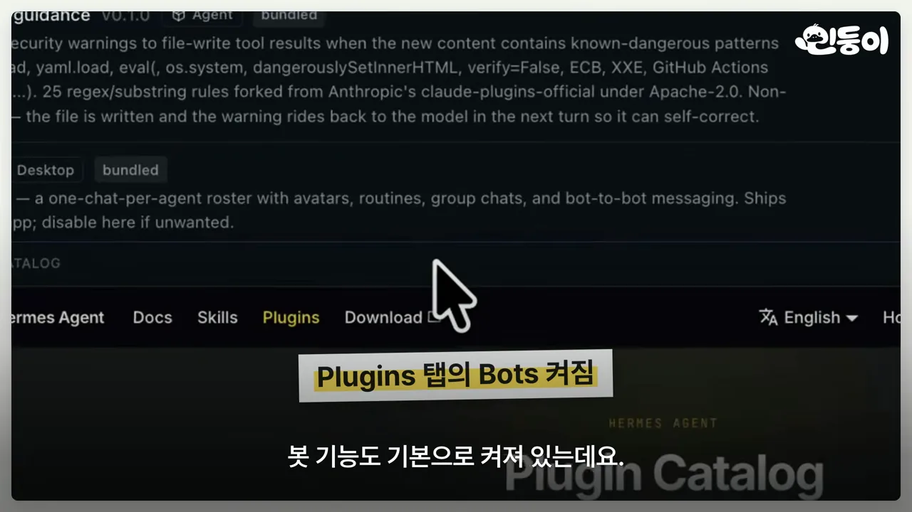
역할별 봇 만들기
헤르메스 하나에게 뉴스도 찾고 디자인도 하고 코딩도 시키면 기억과 스킬이 전부 한곳에 쌓여요. 그래서 봇이 있어요. 영상은 봇을 '역할이 정해진 AI 직원 한 명'이라고 불러요. 봇마다 역할, 모델, 기억, 스킬이 따로라서 리서치 봇이 배운 것이 디자인 봇의 기억에 섞이지 않아요. 실제로도 헤르메스 폴더 안에 봇 이름으로 폴더가 하나씩 생겨요.
AI 뉴스룸 꾸리기
발표자는 카드뉴스를 만드는 AI 뉴스룸을 꾸려요. 편집장, 리서처, 검수자, 디자이너, 이렇게 봇 넷이에요. 왼쪽 'BOTS' 탭에서 새 봇을 누르면 만들기 창이 떠요. 위쪽에서 아바타를 도형, 펫, 업로드 중에 고르고, 아래에 이름·직함·설명을 적어요. 화면에서는 Name에 editor, Title에 AI 소식 편집장을 넣었어요.
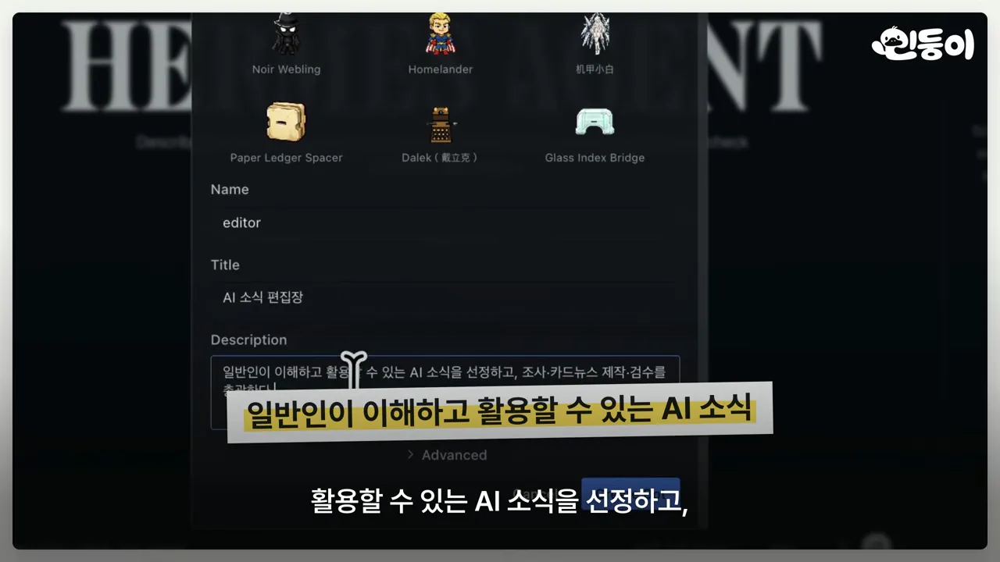
설명 칸에는 '일반인이 이해하고 활용할 수 있는 AI 소식을 선정하고 조사, 제작, 검수를 총괄한다'처럼 이 봇이 하는 일을 적어요. 그 아래 Advanced를 열면 'Share keys & accounts with the main profile' 체크박스가 있어요. 이건 켜 두세요. 앞에서 연결한 구독 로그인을 이 봇도 같이 쓰게 해 줘요.
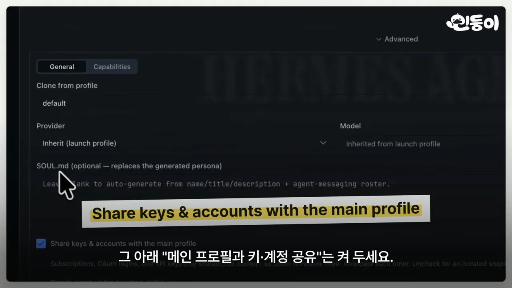
같은 영역의 SOUL.md 칸이 봇의 정체성을 적는 곳이에요. 봇이 일할 때 제일 먼저 읽는 글이라, 여기 적은 대로 성격과 일하는 방식이 정해져요. 발표자는 편집장에게 '어려운 기술 뉴스를 나열하지 말고, 사람들이 그래서 나에게 어떤 도움이 되는가를 이해하게 만든다'는 기준을 넣었어요. 화면 자막에 그 문장의 뒷부분이 보여요.
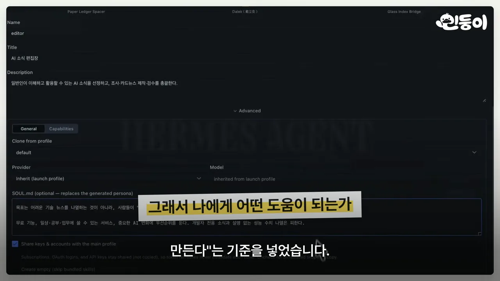
만들기를 누르면 편집장이 바로 자기소개를 해요. 같은 방법으로 리서처, 검수자, 디자이너를 만들어요. 만든 뒤에 고치고 싶으면 봇을 우클릭해서 Edit로 들어가 설명을 채우거나 직함을 바꾸면 돼요. 발표자는 그룹 방에서 부르기 쉽게 직함을 영어로 바꿨어요. 그래서 뒤에서는 편집장이 ai-news-editor-in-chief처럼 보여요.
넷을 한 방에 모으기
새 그룹 채팅을 열면 봇을 2개에서 6개까지 고를 수 있어요. 발표자는 넷을 다 넣고 방 이름을 '민둥이 AI 뉴스룸'으로 정했어요. 화면의 Manage members 창 맨 위에 'Pick 2–6 bots'라는 안내가 있고, 아래로 AI뉴스 리서처, 팩트·디자인 검수, 카드뉴스 디자이너, AI 소식 편집장이 체크돼 있어요.
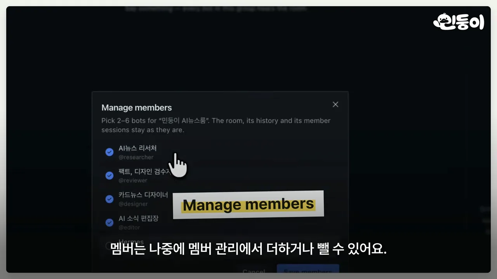
디자이너 봇에 이미지 생성 켜기
봇마다 쓸 수 있는 도구가 따로라서, 그림을 그릴 디자이너 봇에는 이미지 생성 도구를 직접 붙여 줘야 해요. 이건 터미널에서 해요. hermes -p designer tools를 치면 그 봇의 도구 목록이 떠요. -p designer가 '디자이너 봇 프로필에 대해'라는 뜻이에요.
이미지 생성을 고르면 공급자 목록이 나와요. 화면에서 초록색으로 강조된 줄이 'OpenAI (Codex auth) [free] — gpt-image-2 via ChatGPT/Codex OAuth — no API key required'예요. API 키 없이 ChatGPT 구독으로 그림을 그리는 방식이에요. 위아래로 Krea, OpenRouter, DeepInfra 같은 유료 공급자도 보여요.
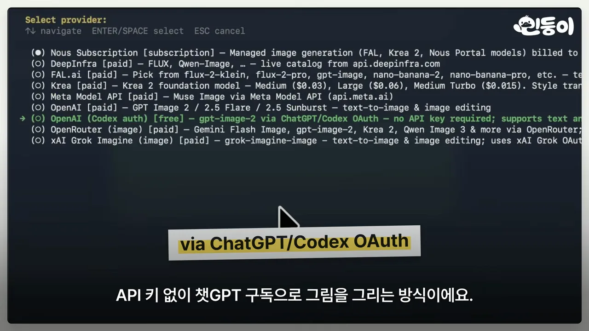
모델은 low, medium, high 세 단계예요. 높을수록 품질은 좋아지고 시간이 더 걸려요. 발표자는 medium을 골랐어요. 고르고 나면 화면 아래에 설정 파일을 저장했다는 줄과 함께 'Changes take effect on next hermes or gateway restart'가 떠요. Done으로 빠져나온 다음 헤르메스를 한 번 껐다 켜 주세요.
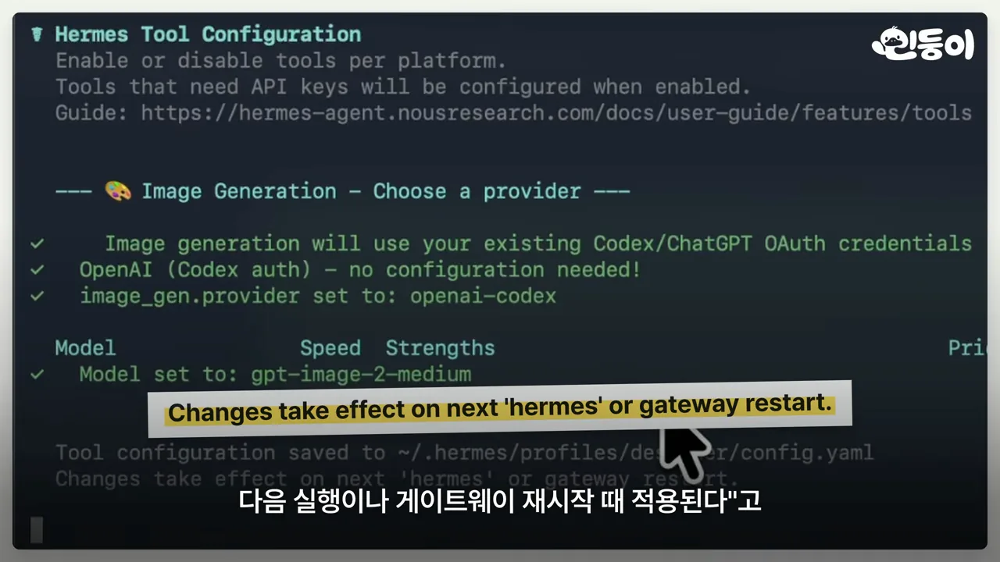
이제 디자이너에게 테스트 이미지 한 장을 부탁하면, 화면 맨 위 줄처럼 '공급자: openai-codex, 모델: gpt-image-2-medium'이라는 답과 함께 이미지가 나와요.
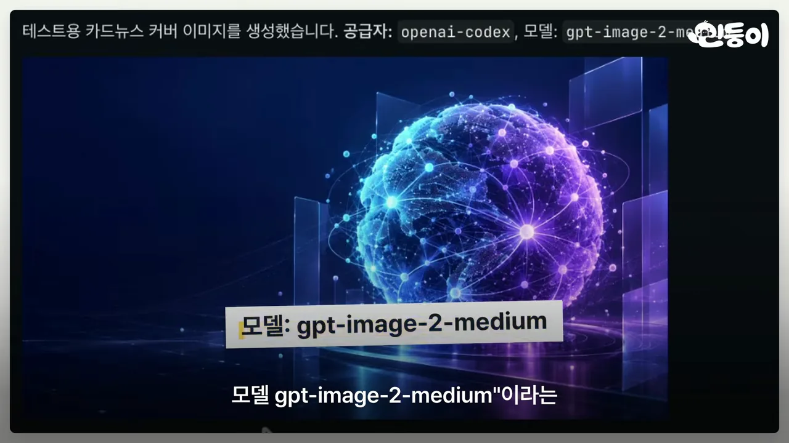
그룹 방에서 카드뉴스 만들기
그룹 방에서 @를 치면 방에 있는 봇 목록이 떠요. 한 봇만 부를 수도 있고 @everyone으로 전부 부를 수도 있어요. 같이 할 일은 꼭 그룹 방에 보내세요. 봇 한 명의 개인 대화창에 보내면 그 봇 혼자 일을 시작해요. 슬라이드에서는 문서 한 장이 편집장, 리서처, 검수자, 디자이너 순으로 넘어가는 모습으로 이걸 보여 줘요.
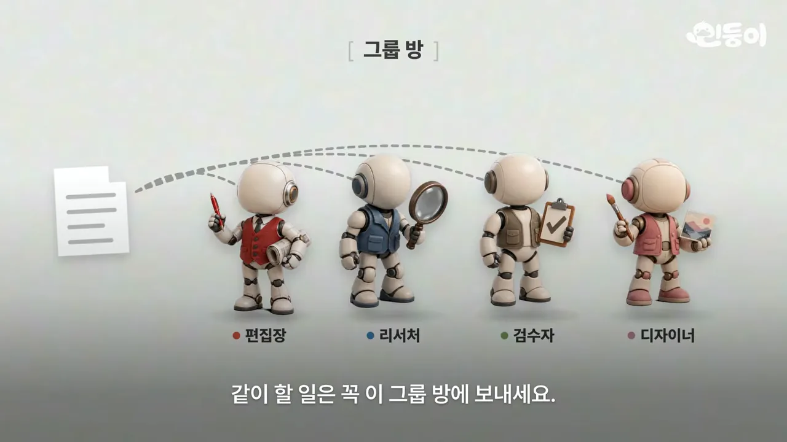
첫 일: 뉴스 고르기까지만
첫 지시는 편집장을 불러서 보냈어요. 화면에 그 지시문이 보이는데, 맨 위 줄이 '첫 번째 작업은 뉴스 선정까지만 진행하자. 이미지 생성과 예약·외부 전송은 아직 하지 마'예요. 처음부터 끝까지 다 시키지 않고 범위를 잘라서 맡긴 거예요.
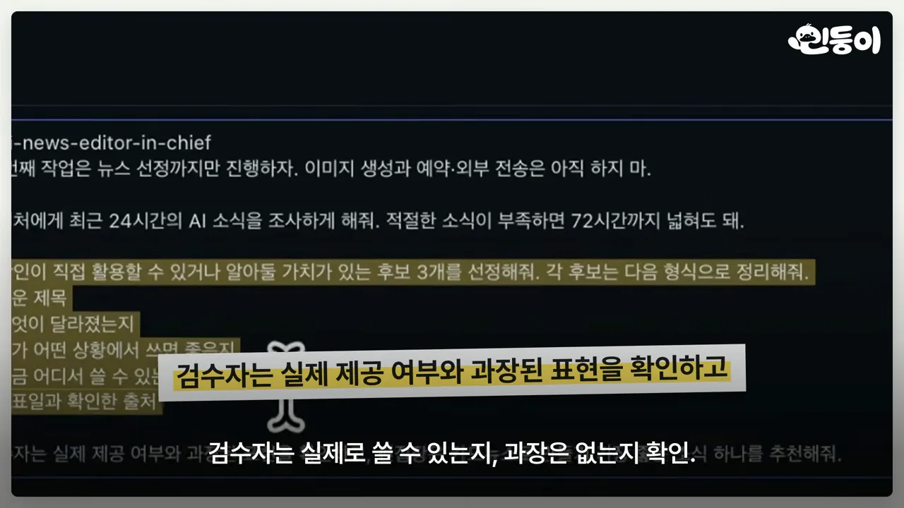
지시문에는 봇마다 할 일이 적혀 있어요.
- 리서처 — 최근 24시간 AI 소식을 찾아요. 부족하면 72시간까지 넓혀요. 후보마다 쉬운 제목, 무엇이 달라졌는지, 누가 어떤 상황에서 쓰면 좋은지, 지금 어디서 쓸 수 있는지, 발표일과 출처를 정리해요.
- 검수자 — 실제로 쓸 수 있는지, 과장된 표현은 없는지 확인해요.
- 편집장 — 카드뉴스로 만들기 가장 좋은 소식 하나를 추천해요.
sequenceDiagram participant 나 participant 편집장 participant 리서처 participant 검수자 나->>편집장: 뉴스 선정까지만 해 줘 편집장->>리서처: @리서처 최근 24시간 소식 후보 3개 리서처-->>검수자: 후보와 출처 검수자-->>편집장: 기간 밖, 한국 출시 미확인 후보는 탈락 편집장-->>나: 통과는 1건, 이번엔 보류를 권해요
그러면 편집장이 리서처를 부르고, 리서처가 찾아온 걸 검수자가 다시 확인해요. 화면 가운데 @ai-news-editor-in-chief처럼 봇끼리 골뱅이로 서로 부르면서 일하는 게 보여요.
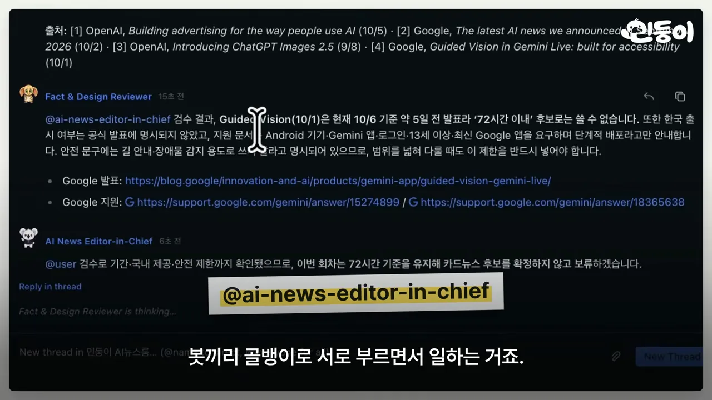
검수자는 한 후보를 두고 발표가 5일 전이라 72시간 기준에 맞지 않고, 한국 출시 여부도 공식 발표에 없다며 걸렀어요. 기준을 통과한 건 'ChatGPT로 이미지를 만들 때 광고가 보이기 시작한다'는 소식 하나였어요. 편집장은 억지로 채우지 않고 이번엔 보류하자고 했어요.
봇끼리 주고받는 대화가 길어지면 위쪽 활동 줄의 Stop을 누르세요. 화면 오른쪽 위에 Stop 버튼이 보이고, 누르면 방의 봇이 전부 멈춰요. 다시 움직이게 하려면 멈춘 봇을 @로 부르거나 새 메시지를 보내면 돼요.
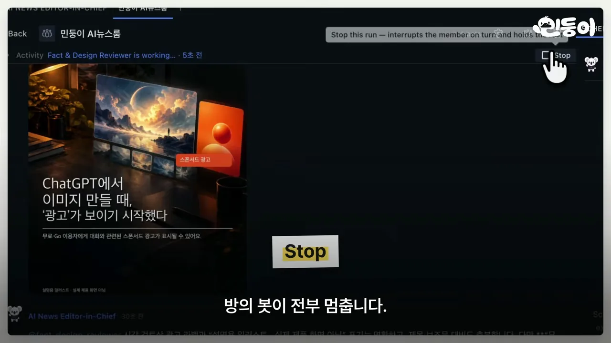
참고 이미지로 디자인 다듬기
발표자는 후보 중 ChatGPT 이미지 광고 소식을 골라 카드뉴스로 만들어요. 디자이너에게는 먼저 취향을 알려 줘야 해요. 핀터레스트에서 캐러셀 디자인을 검색해 마음에 드는 카드뉴스를 캡처하고, 그룹 방에 올리면서 "아직 만들지 말고 분석부터 해 줘"라고 했어요. 제목 크기와 굵기, 사진과 글의 배치, 여백, 색, 여러 장이 한 시리즈처럼 보이게 하는 요소까지요.
화면은 디자이너의 분석 답이에요. 제목 하이라이트 부분에 '사진이 주인공이고 타이포가 그 위를 강하게 가로지르는 에디토리얼 포스터형'이라고 정리돼 있고, 그 아래 항목이 번호를 달고 이어져요.
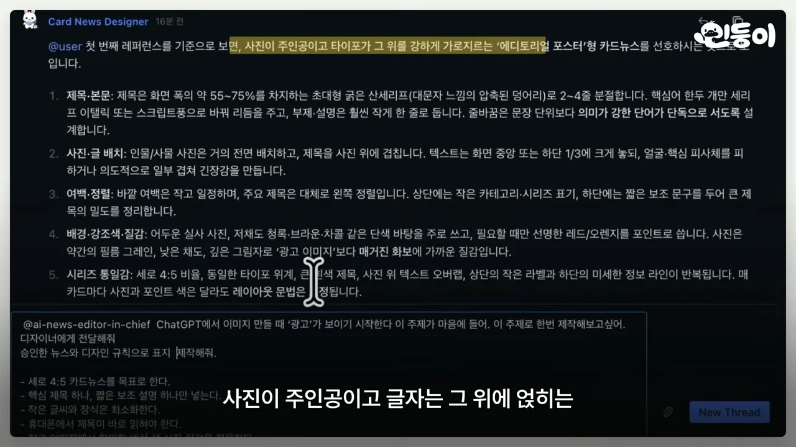
다음엔 편집장에게 이 주제가 마음에 드니 디자이너에게 넘겨 달라고 했어요. 조건도 붙였어요. 세로 4:5, 제목 하나와 짧은 설명 하나, 휴대폰에서 바로 읽힐 것. 편집장이 제목, 보조 문구, 출처를 정리해서 디자이너를 부르고, 디자이너가 첫 카드를 올려요. 화면 맨 위 줄에 '1080x1350px 정확히 4:5로 확인했다'는 말까지 붙어 있어요.
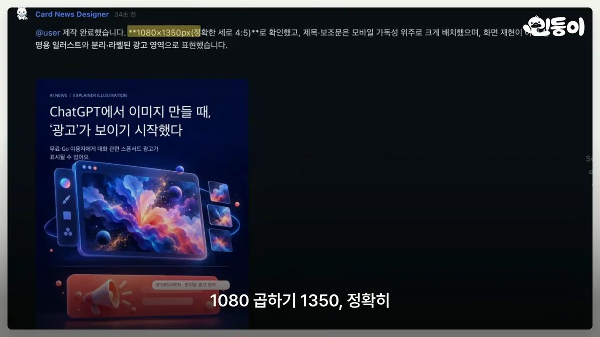
이럴 땐 다시 해 달라고만 하지 말고 편집장에게 "너라면 어떻게 하겠어?"라고 물어보세요. 편집장이 참고 이미지와 다른 점을 짚고, 사진 크기와 제목 위치처럼 계속 유지할 기준을 정해요. 그 기준으로 다시 만든 두 번째 카드는 어두운 배경 위에 사진형 화면이 크게 놓이고, 제목이 그 아래로 내려왔어요.
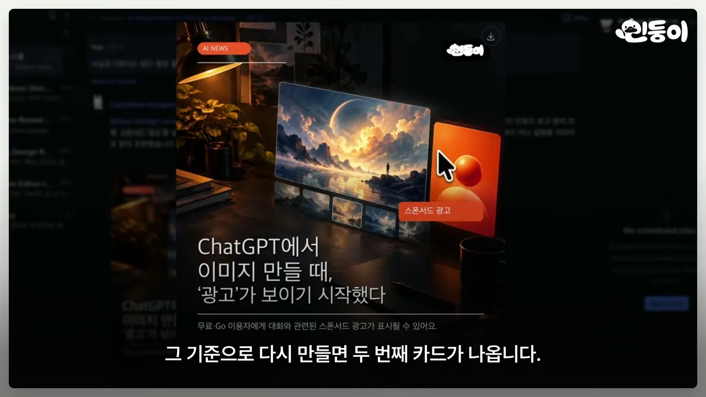
더 가깝게 가고 싶으면 참고 이미지를 다시 주면서 특징을 말로 짚어 주세요. 발표자는 글은 가운데, 인물은 한 명, 색감과 질감 톤까지 이 이미지처럼 맞춰 달라고 했어요. 인물은 외국인으로, 이미지 위치와 배경색까지 더 맞춰 달라고 하자 디자이너가 앞으로 지킬 규칙부터 정리해 줬어요.
이 규칙은 SOUL.md에 저장하세요. 디자이너 봇을 우클릭해 Edit, 고급 설정의 SOUL.md에 붙여 넣고 저장하면 다음 작업부터는 따로 말하지 않아도 이 기준을 먼저 읽고 만들어요. 그 뒤 세 장짜리를 만들어 봤어요. 편집장이 장마다 제목과 짧은 설명 원고를 확정해 넘기고, 디자이너가 세 장을 올렸어요.
슬라이드의 왼쪽이 처음 카드, 오른쪽 세 장이 지금 카드예요. 색 배경 앞에 선 인물 사진이 화면을 채우고, 큰 제목이 얹히고, 위쪽 작은 표기까지 세 장이 한 시리즈처럼 맞춰졌어요.
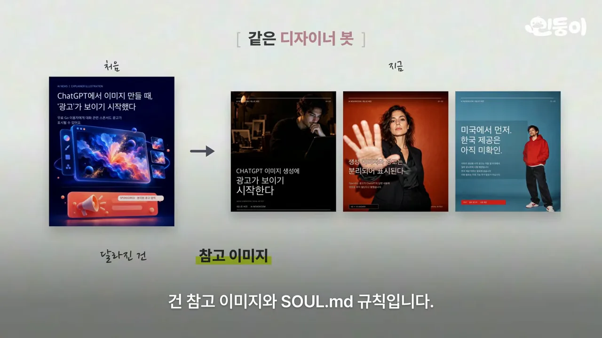
매일 반복할 수 있게 폴더로 남기기
마지막으로 이 일을 매일 반복할 수 있게, 편집장에게 제작 가이드와 모든 봇이 쓰는 작업 폴더를 만들어 달라고 했어요. 편집장의 답을 보면 세 갈래로 나뉘어요.
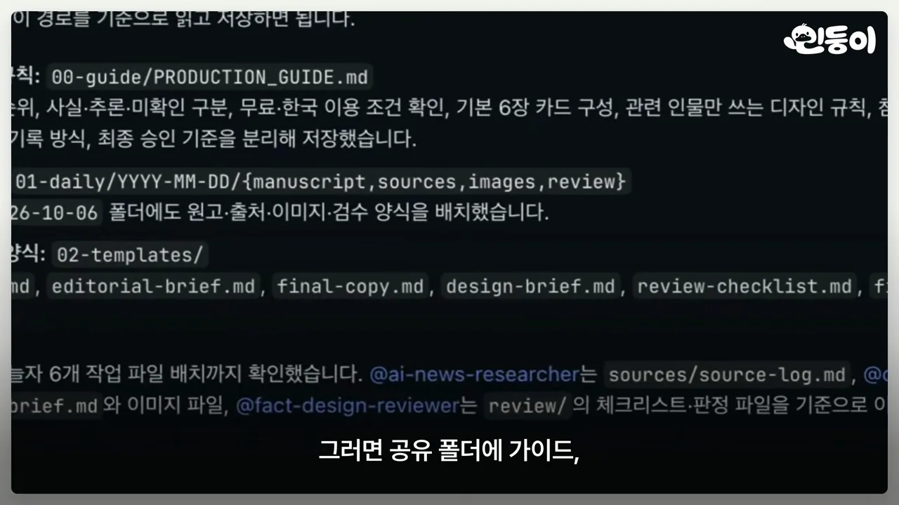
| 폴더 | 담는 것 |
|---|---|
00-guide/PRODUCTION_GUIDE.md | 제작 원칙: 사실·추론·미확인 구분, 무료·한국 이용 조건 확인, 기본 6장 카드 구성, 디자인 규칙, 최종 승인 기준 |
01-daily/YYYY-MM-DD/ | 그날의 원고, 출처, 이미지, 검수 결과 |
02-templates/ | 편집 브리프, 최종 원고, 디자인 브리프, 검수 체크리스트 양식 |
이렇게 해 두면 원고, 출처, 이미지, 검수 결과가 날짜별로 쌓여요. 다음에 이 대화가 없어도 봇들이 같은 방식으로 일하게 되는 거죠.
게이트웨이로 슬랙·디스코드 연결하기
여기까지는 전부 앱 안에서 했어요. 출근길에 휴대폰으로 "이거 조사해 줘" 하고 던지려면 밖에서도 말이 닿아야 해요. 그걸 이어 주는 게 게이트웨이예요. 내 컴퓨터 뒤에서 조용히 돌면서 슬랙이나 디스코드로 온 메시지를 헤르메스에 전하고, 답을 다시 보내 주는 프로그램이에요.
게이트웨이는 텔레그램, 디스코드, 슬랙, 왓츠앱, 이메일까지 20곳 넘게 붙어요. 화면 왼쪽 메신저 목록이 길게 이어지고, 오른쪽에 '20곳+'라는 메모가 붙어 있죠. 아쉽게도 카카오톡은 공식 목록에 없어요.

중간에서 말을 전해 주는 거라, 게이트웨이가 꺼져 있으면 메시지를 보내도 답이 없고 설정을 바꾼 뒤엔 다시 시작해 줘야 해요. 하나 더, 허용 목록이 있어요. 봇이 누구 말을 들을지 정하는 명단이라 여기 내 아이디가 있어야 내 메시지에 답해요. 이 봇은 내 컴퓨터에서 명령까지 돌릴 수 있으니까 명단엔 나만 넣으세요.
슬랙 연결하기
슬랙은 슬랙 쪽에 앱을 하나 만들고, 열쇠 두 개를 받아 헤르메스에 넣는 순서예요. 앱 설정은 헤르메스가 파일로 만들어 줘요. 화면처럼 터미널에 hermes -p editor slack manifest --agent-view --write를 치면 매니페스트라는 앱 설정 파일이 저장돼요. 봇이 무엇을 읽고 쓸지, 어떤 메시지를 받을지까지 다 적힌 파일이에요. -p editor는 편집장 봇 프로필로 만든다는 뜻이에요.
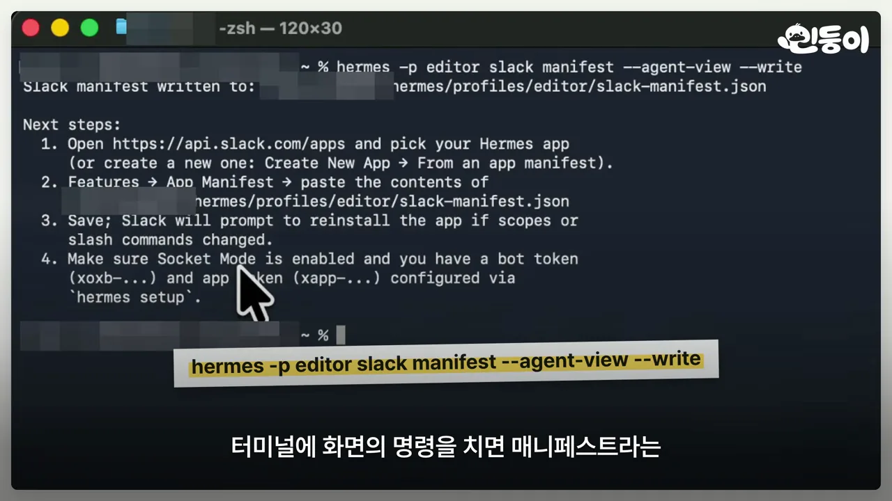
cat으로 그 파일을 열어 내용을 통째로 복사하세요. 그다음 api.slack.com/apps에서 Create New App, From an app manifest를 골라요. 워크스페이스를 정하고 복사한 내용을 붙여 넣으면 이 앱이 무엇을 할 수 있는지 요약이 나오고, Create를 누르면 앱이 생겨요. 권한을 하나하나 넣을 필요가 없는 거죠.
첫 번째 열쇠는 왼쪽 메뉴의 Install App에 있어요. 화면처럼 워크스페이스에 설치를 누르고 허용하면 xoxb-로 시작하는 봇 토큰이 나와요. 복사해 두세요.
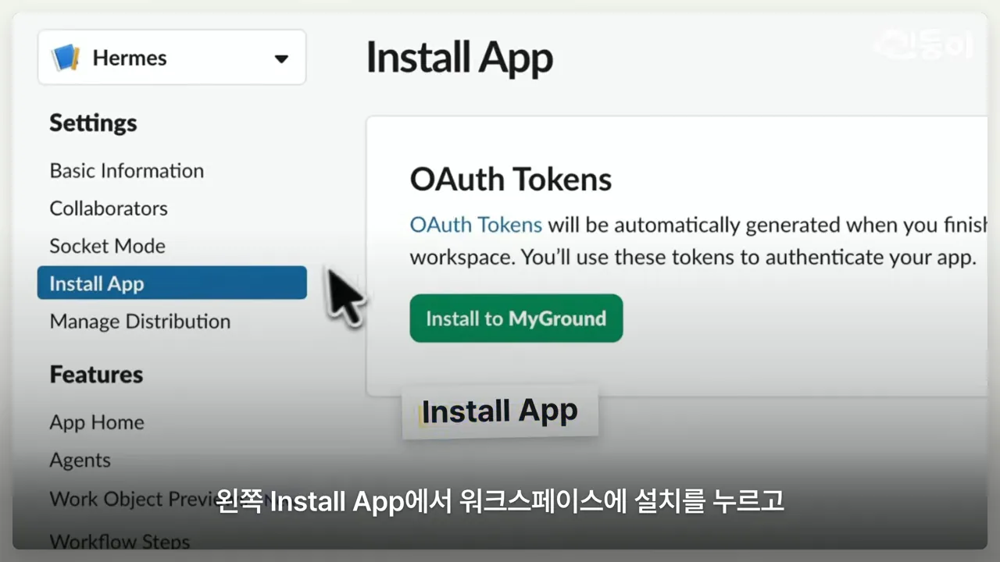
두 번째 열쇠는 Basic Information 아래쪽 App-Level Tokens에 있어요. 화면 가운데 'Generate Token and Scopes' 버튼이 보이죠. 이름은 아무거나 괜찮은데 발표자는 hermes-socket으로 했어요. Add Scope에서 connections:write 하나만 넣고 Generate를 누르면 xapp-로 시작하는 토큰이 나와요.
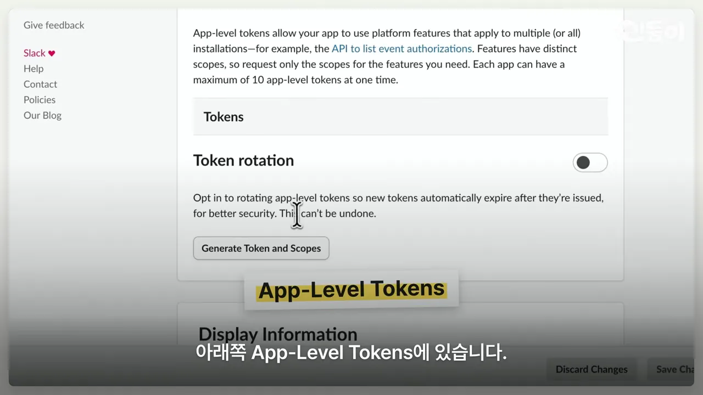
| 열쇠 | 시작 글자 | 받는 곳 |
|---|---|---|
| 봇 토큰 | xoxb- | Install App에서 워크스페이스에 설치 |
| 앱 토큰 | xapp- | Basic Information의 App-Level Tokens, 범위 connections:write |
| 멤버 ID(Identifier) | — | 슬랙 내 프로필의 점 세 개 메뉴, 멤버 ID 복사 |
| 홈 채널 ID | C | 채널 이름을 눌러 정보 탭 맨 아래 |
이제 터미널에서 hermes gateway setup을 치고 Slack을 골라요. 봇 토큰, 앱 토큰 순서로 붙여 넣는데, 붙여 넣어도 화면엔 별표만 보이는 게 정상이에요. 다음은 허용 목록이에요. 화면의 'Allowed user IDs' 줄에 슬랙 프로필에서 복사한 멤버 ID를 붙여 넣으면 아래에 'Slack allowlist configured'가 떠요.
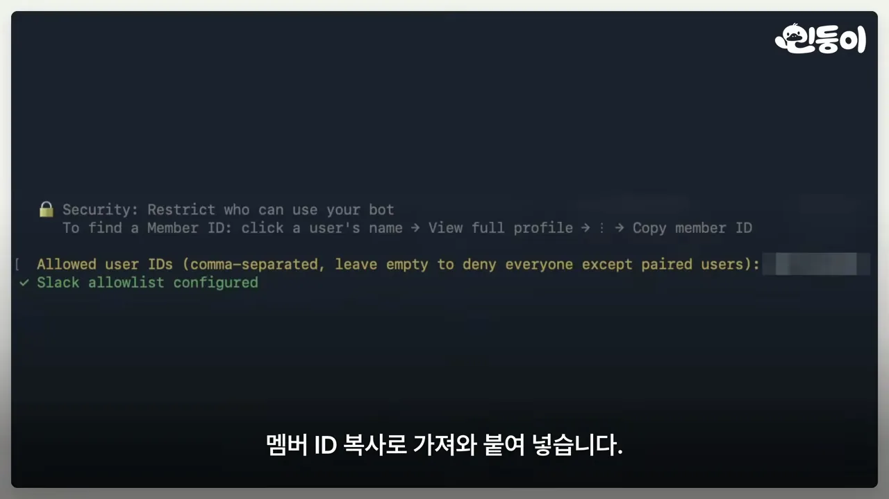
홈 채널은 예약 작업 결과나 알림을 받을 채널이에요. 봇이랑 쓸 채널을 하나 만들고, 채널 정보 탭 맨 아래에서 채널 ID를 복사해 넣으면 돼요. C로 시작하는 값이고, 나중에 그 채널에서 /sethome을 쳐도 돼요. 마지막에 게이트웨이를 다시 시작할지 물으면 Y를 눌러요.
이제 슬랙 채널에서 @를 치고 헤르메스를 고르면 채널에 없다고 나와요. 초대하면 봇이 들어오고, 게이트웨이 online이 뜬 뒤부터 답해요. "넌 뭘 할 수 있니"라고 물으니, 화면처럼 대화를 넘어 실제 작업을 할 수 있다며 할 수 있는 일 열 가지를 예시까지 붙여 정리해 줬어요.
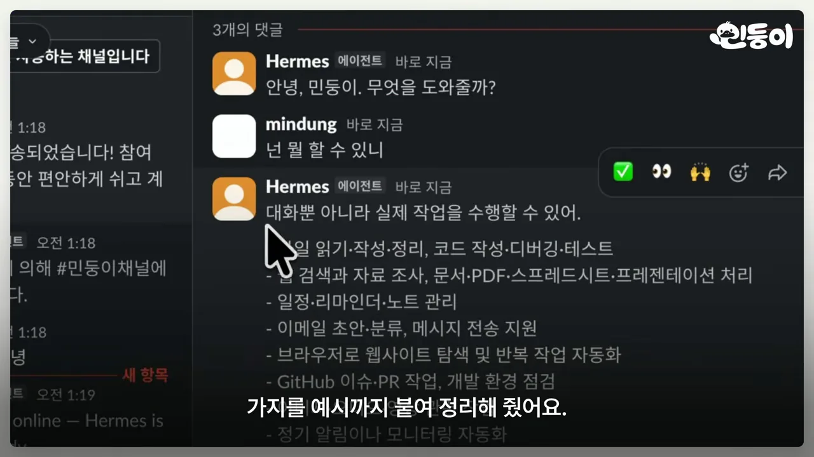
디스코드 연결하기
디스코드도 흐름은 같아요. 봇을 만들고, 토큰을 받고, 터미널에 넣고, 내 서버에 초대하는 거죠. 디스코드 개발자 포털에서 오른쪽 위 만들기, 빈 앱 만들기를 누르고 이름을 넣고 약관에 체크하면 앱이 생겨요.
왼쪽 봇 메뉴에서는 권한 스위치가 중요해요. 화면 가운데 'Privileged Gateway Intents' 아래에 스위치가 세 개 있는데, Server Members Intent와 Message Content Intent 두 개는 꼭 켜세요.

| 스위치 | 꺼져 있으면 |
|---|---|
| Message Content Intent | 봇이 아예 접속을 못 해요 |
| Server Members Intent | 허용 목록에 넣은 사람을 알아보지 못해요 |
위로 올라가 토큰 초기화를 누르고 확인한 뒤 비밀번호를 넣으면 새 토큰이 나와요. 복사하고 아래 변경 사항 저장까지 꼭 누르세요. 안 누르면 켜 둔 스위치가 적용되지 않아요.
터미널에서 다시 hermes gateway setup을 치고 이번엔 Discord를 골라 토큰을 붙여 넣으면, 헤르메스가 바로 확인해 줘요. 화면 아래쪽에 '토큰 작동함, 메시지 콘텐츠 인텐트 켜짐'이 뜨고, 그 위에는 서버에 봇을 넣을 링크와 허용 목록 안내가 출력돼 있어요.
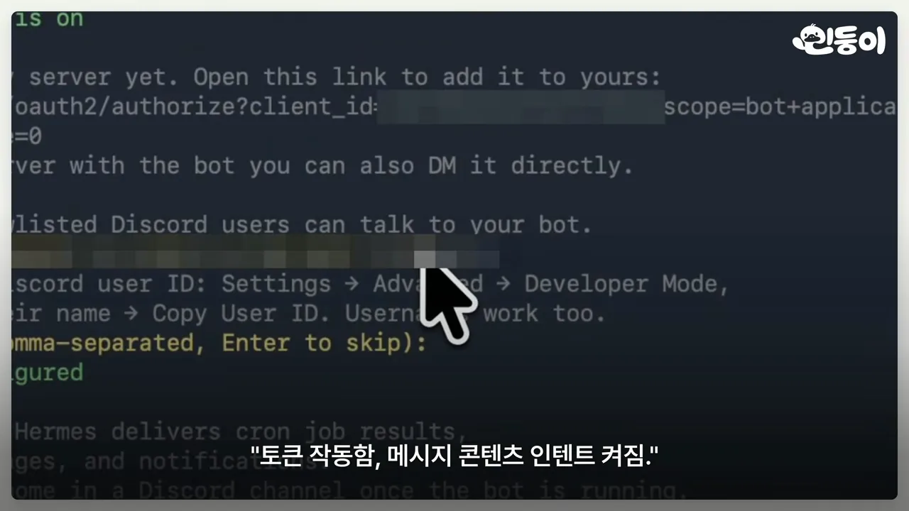
나를 허용 목록에 넣을지 물으면 Y를 눌러요. 홈 채널은 봇이랑 쓸 서버의 채널로 정해요. 서버가 없으면 디스코드 왼쪽 더하기로 하나 만드세요. 채널 ID를 복사하려면 먼저 디스코드 설정의 고급에서 개발자 모드를 켜야 해요. 그러면 채널을 우클릭했을 때 채널 ID 복사가 보여요.
이제 봇을 내 서버에 들여요. 개발자 포털의 설치 메뉴에서 길드 설치의 범위에 bot을 추가해요. 화면에서는 '길드 설치' 아래 스코프 칸에 applications.commands와 bot이 들어 있어요. 설치 링크를 열어 서버에 추가, 내 서버를 고르고 승인하면 돼요.
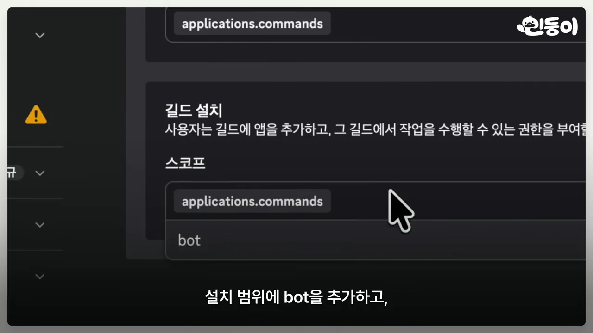
봇이 들어왔으면 터미널에서 hermes gateway restart로 한 번 다시 시작해요. 서버에 게이트웨이 online이 뜨면 봇을 @로 부르고 '안녕'만 쳐도 스레드가 열리면서 무엇을 도와줄지 물어요. "넌 누구니"라고 하면 자기를 헤르메스 에이전트라고 소개해요. 이제 휴대폰의 디스코드나 슬랙에서 언제든 말을 걸 수 있어요.
칸반으로 일 나누기
일을 여러 개 맡기기 시작하면 채팅만 봐서는 누가 뭘 하고 있는지, 어디까지 됐는지 찾기가 번거로워요. 그래서 칸반이 있어요. 할 일 카드를 붙여 두는 보드예요.
칸반 켜기
칸반은 처음엔 꺼져 있어서 먼저 켜야 해요. 기능 화면의 Tools 탭에서 Kanban을 켜면 칸반 에이전트 도구가 켜졌다는 알림이 뜨고, Plugins 탭에도 kanban이 켜짐으로 바뀌어요. 그러면 화면처럼 왼쪽 메뉴의 Scheduled jobs 아래에 Kanban이 생겨요.
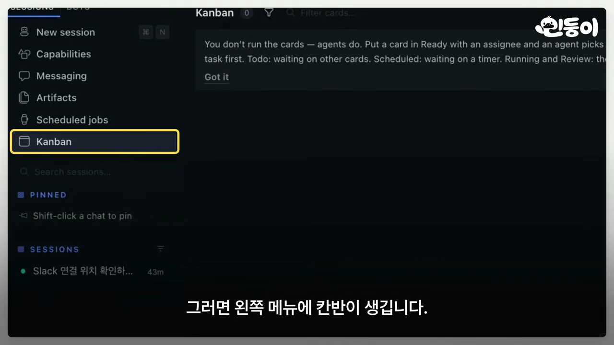
열어 보면 위에 'You don't run the cards — agents do'라고 적혀 있어요. 카드를 움직이는 건 사람이 아니라 에이전트라는 뜻이에요. 보통 칸반은 사람이 카드를 옮기지만, 여기선 카드에 일을 적고 담당 봇을 정하면 봇이 가져가서 처리해요. 그래서 실행될 카드엔 담당 봇이 꼭 잡혀 있어야 해요. 안내 문구에도 'No assignee, no run'이라고 적혀 있어요.
조사팀과 첫 카드
칸반에서 일을 나누는 모습을 보여 주려고 발표자는 조사팀을 따로 꾸렸어요. 슬라이드에 네 봇이 서 있어요. 해커톤을 찾는 hackathon-scout, AI 소식을 찾는 ai-researcher, 사실을 확인하는 fact-checker, 레이더 원고를 쓰는 radar-editor예요.
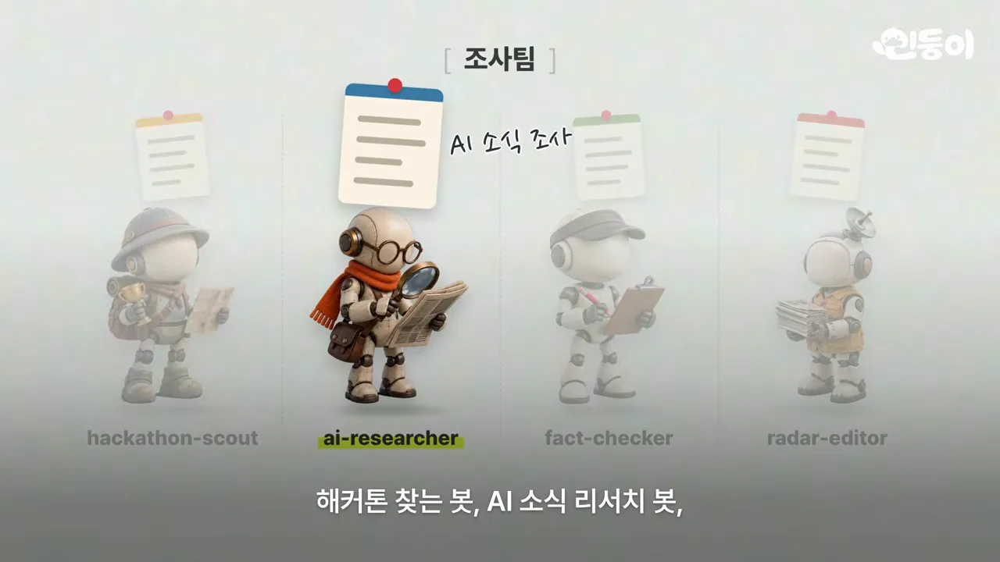
맨 왼쪽 칸에서 새 카드를 만들어요. 제목은 '참가할 만한 신규 해커톤 조사', 설명에는 어디서 찾고 결과를 어떤 항목으로 정리할지 적어요. 화면 아래 'ASSIGNEE' 목록을 펼치면 radar-editor, ai-researcher, designer, editor, fact-checker, hackathon-scout 같은 봇 이름이 쭉 나와요. 여기서 hackathon-scout를 골랐어요.
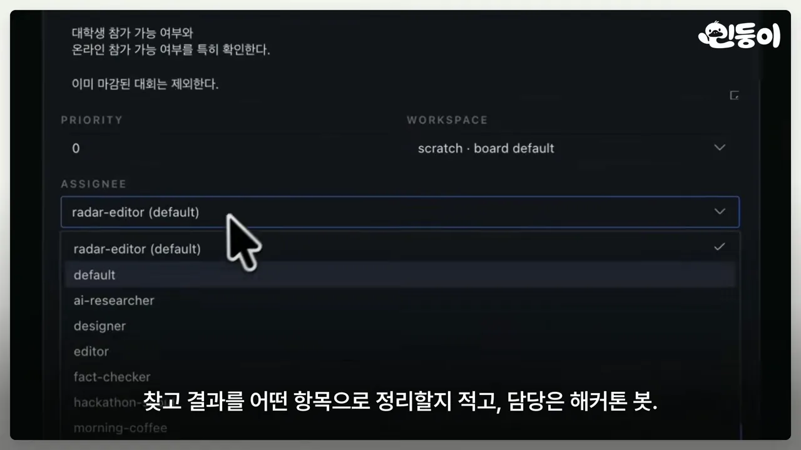
AI 소식 카드도 하나 더 만들어 ai-researcher에게 줬어요. 그러면 카드 한 장이 여러 장으로 나뉘어요. 화면을 보면 TODO 칸에 '후보 해커톤의 모집 상태와 참가 조건 검증', '검증된 해커톤을 우선순위별로 정리' 같은 작은 카드가 생겼고, 'RUNNING' 칸에서는 hackathon-scout가 'HolaWorld에서 참가 가능한 기술 해커톤 조사'를 working 상태로 처리하고 있어요.

보드 맨 위 안내 문구는 칸마다 뜻도 알려 줘요. 화면에 적힌 내용을 옮기면 이래요.
| 칸 | 뜻 |
|---|---|
| Triage | 에이전트가 아이디어를 제대로 된 작업으로 먼저 다시 써요 |
| Todo | 다른 카드가 끝나기를 기다려요 |
| Scheduled | 타이머를 기다려요 |
| Ready | 담당이 있으면 1분 안에 에이전트가 가져가요 |
| Running · Review | 에이전트의 칸이에요. 손대지 않아요 |
| Blocked | 사람의 답을 기다려요 |
| Done | 결과가 카드로 돌아와요 |
결과는 카드 안에서
다 끝나면 화면 구석에 작업 완료 알림이 떠요. 결과는 카드 안에서 봐요. 완료 칸의 카드를 열면 오른쪽 아래 'CREATED BY' 칸에 auto-decomposer라고 적혀 있어요. 사람이 아니라 자동으로 쪼개는 기능이 만든 카드라는 뜻이에요. 가운데 Comments 탭에는 봇이 남긴 결과가 있어요. 이 카드엔 '조사 완료: 2026-10-07 기준 OpenAI 공식 발표·문서만으로 8개 후보를 정리했다'는 댓글이 달려 있죠.
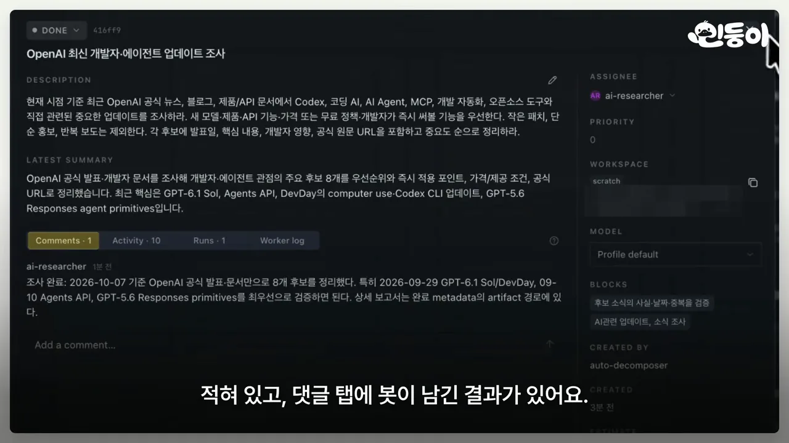
큰 카드 한 장, 역할대로 나누기
이번엔 큰 카드 한 장으로도 해 봤어요. 제목은 '오늘의 AI Radar 완성'이에요. 카드에 어디서 해커톤을 찾고, 어떤 소식을 모으고, 공식 발표를 먼저 확인하고, 어떤 형식으로 쓸지를 통째로 넣었어요. 이번에도 카드가 나뉘었는데, 이번엔 역할대로 나뉘었어요.
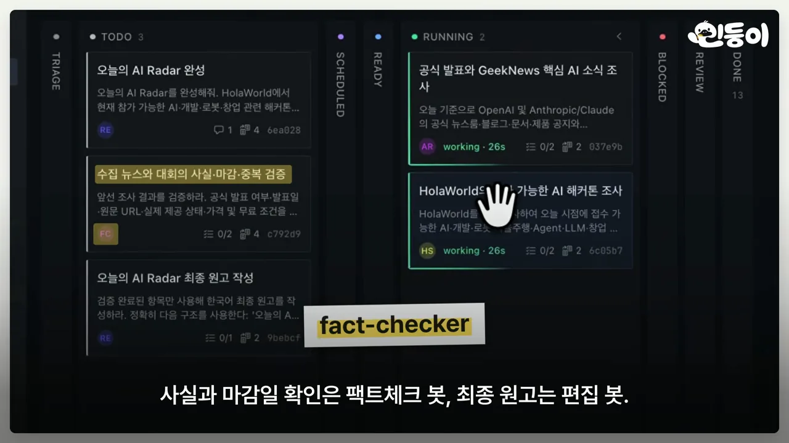
- 해커톤 조사 → hackathon-scout
- 소식 조사 → ai-researcher
- 사실과 마감일 확인 → fact-checker
- 최종 원고 → radar-editor
결과는 슬랙으로
칸반 결과는 메신저로 받아 볼 수 있어요. 슬랙에서 "지금 칸반에서 제작한 결과 여기에 너가 써 줄 수 있어?"라고 물으니, 봇이 어느 결과를 올릴지 버튼을 붙여 되물었어요. 화면에 '현재 진행 중인 작업이 완료되면 자동으로 여기 올리기', '이전 완료된 AI Radar 결과를 지금 올리기' 같은 버튼이 보여요.
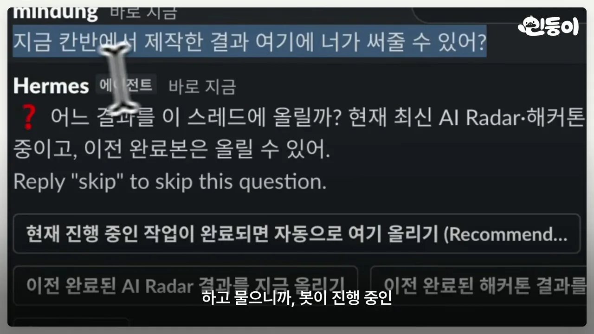
완료본을 받으니 '오늘의 AI Radar — 완료본'이 왔어요. 화면 맨 위에 '기준: 2026년 10월 7일 KST, 공식 발표·문서·저장소로 내용과 발표일을 재확인한 8건'이라고 적혀 있고, 항목마다 무엇인지, 왜 중요한지, 발표일, 링크가 붙어 있어요.
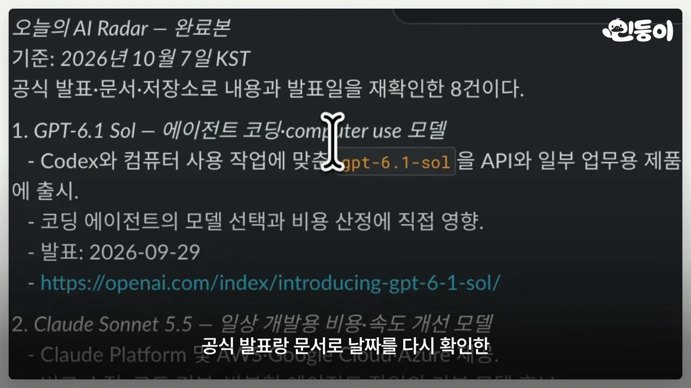
해커톤은 대회 일곱 개를 마감일과 함께 정리해 왔어요. 마지막 줄엔 한 대회 공지의 날짜 표기가 맞지 않는다는 표시도 달려 있었어요. 화면 아래쪽 '주의:' 줄을 보면, 세부 공지에 이후 심사 일정 일부가 2025년으로 표기된 불일치가 있으니 운영진에게 확인하는 편이 안전하다고 적혀 있어요.
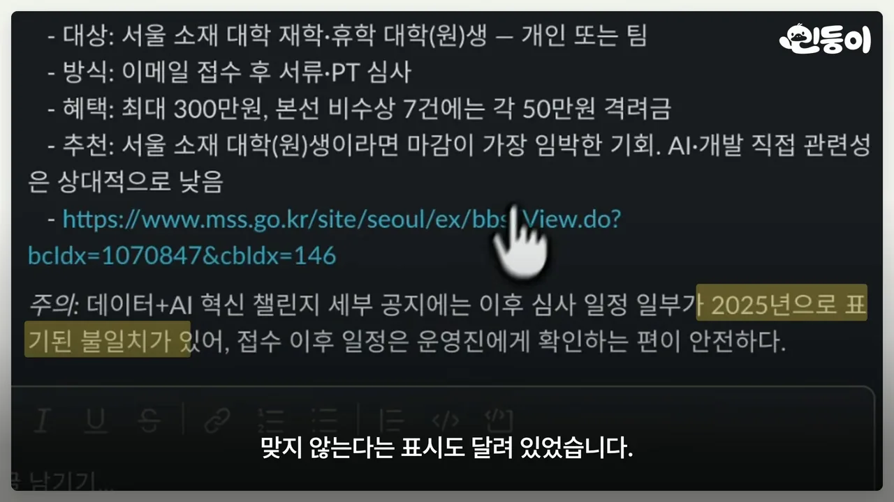
발표자의 정리는 이래요. 찾고 정리하는 건 봇이 하고, 결정은 내가 하는 거예요.
예약 작업과 개인 비서로 넓히기
매일 아침 알아서: 예약 작업
이 보고를 매일 아침 받으려면 예약 작업을 걸어요. 앱의 Scheduled jobs 화면에서 New cron을 누르고 이름은 '모닝브리핑'으로 했어요. Prompt 칸에는 시킬 일을 문장으로 적어요. 화면에 'AI 주요 업데이트 + 해커톤 공고·마감일 브리핑'이 강조돼 있고, 뒤로 카드뉴스로 만들고 리서치, 팩트체크, 디자이너 순으로 하라는 내용이 이어져요.
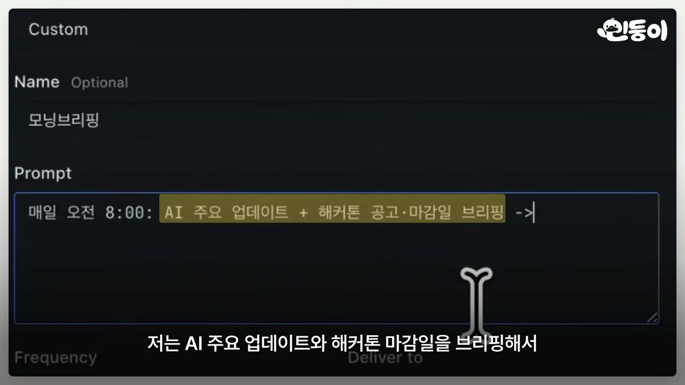
주기는 매일, 시각은 9시로 정해요. 아래 미리보기에 'Every day at 오전 9:00'이 뜨는지 보세요.
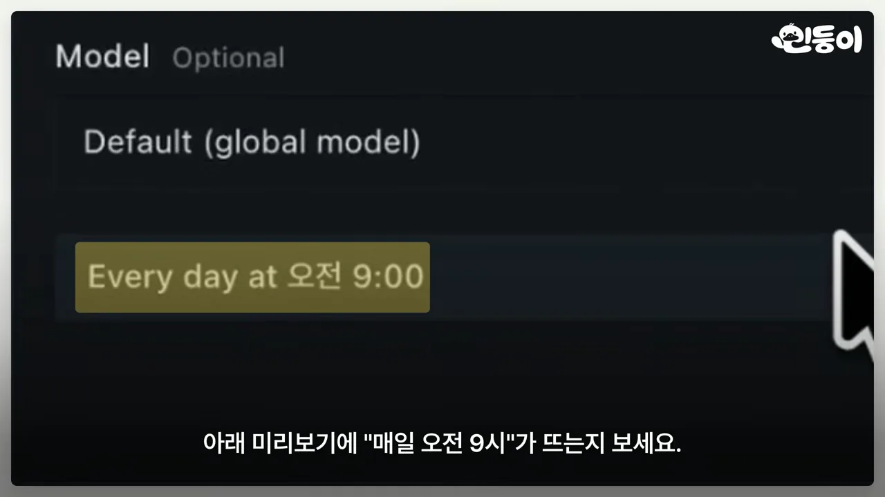
결과를 받을 곳도 여기서 체크하고 만들기를 누르면, 목록에 Scheduled 표시와 다음 실행 시각이 떠요. 이 화면에서 재미있는 점이 하나 보여요. 'PROMPT' 칸에는 '매일 오전 8:00'이라고 적혀 있는데, Frequency는 0 9 * * *이고 Next는 '2026. 10. 7. 오전 9:00:00'이에요. 발표자 말대로 실제 시각은 할 일 문장이 아니라 주기가 정해요.
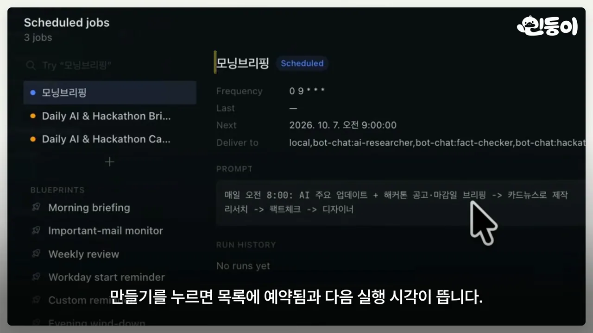
옆의 Trigger now(지금 실행)를 누르면 9시까지 기다리지 않고 바로 한 번 돌려 볼 수 있어요. 처음 만들었을 땐 한 번 눌러서 결과 모양부터 보세요.
예약을 만들고 나니 봇이 메시지를 하나 남겼어요. 슬라이드 위쪽의 'Self-improvement review: Skill scheduled-agent-workflows created'예요. 아래 카드에는 그 스킬에 담긴 순서(New cron, 이름·할 일 적기, 주기: 매일 9:00, 받을 곳 체크, Create cron)가 적혀 있어요.
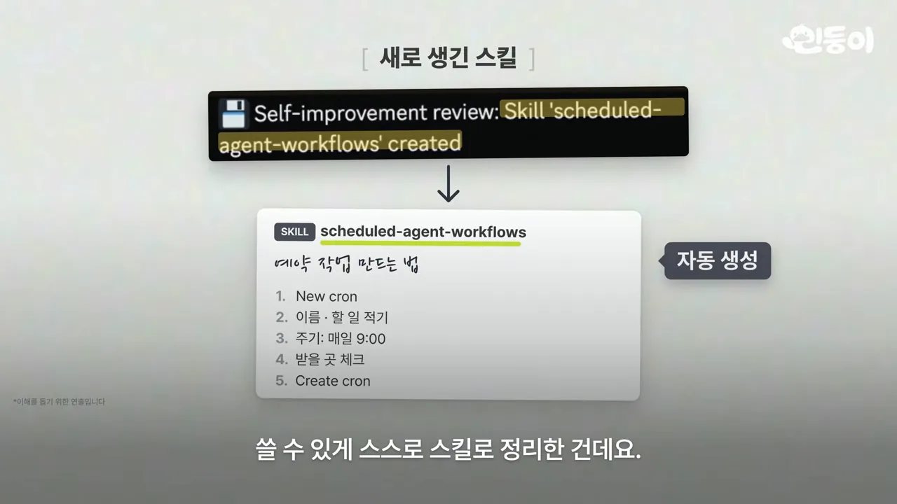
코딩, 구글, 나라장터까지
여기까지는 AI 소식과 카드뉴스로 해 봤어요. 슬라이드는 같은 틀을 네 갈래로 넓혀 보여 줘요. AI 소식·카드뉴스, 코딩, 일정 관리, 입찰 공고예요.
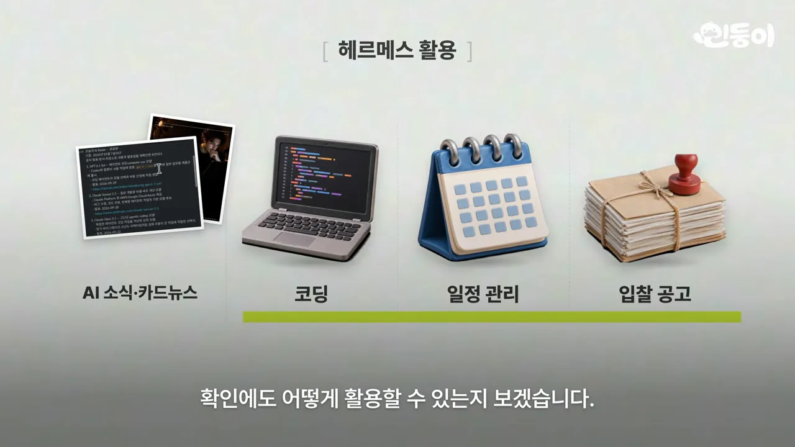
- 코딩 — 헤르메스에는 Claude Code나 Codex에게 코딩을 넘기는 스킬과 GitHub를 다루는 스킬이 기본으로 들어 있어요. 그래서 휴대폰 디스코드로 "어제 만든 정리 스크립트에 엑셀 저장 기능 붙이고 테스트까지 돌려 줘"라고 던지면, 헤르메스가 내 컴퓨터의 코딩 에이전트에게 일을 넘겨요.
- 구글 — Gmail, 캘린더, 드라이브, 시트, 문서를 다루는 구글 워크스페이스 스킬이 들어 있어요. 다만 처음 연결할 땐 구글 클라우드에서 내 로그인 설정을 직접 만들어야 해서 슬랙보다 한 단계 더 손이 가요. 한 번 연결해 두면 "오늘 일정이랑 중요한 메일 다섯 개 요약해서 슬랙으로 보내 줘"를 매일 아침 7시 반 예약으로 걸어 둘 수 있어요.
- 나라장터 — 입찰을 챙기는 일을 한다면 이게 제일 쓸모 있을 거라고 해요. 공공데이터포털에 '조달청 나라장터 입찰공고정보서비스'라는 공식 API가 있어요. 활용 신청을 하면 인증키를 주는데, 화면을 긁어 오는 크롤링보다 이 API로 받는 게 훨씬 안정적이에요.
나라장터 흐름은 슬라이드 한 장에 담겨 있어요. 내가 헤르메스에게 부탁하면 헤르메스가 공고 스크립트를 만들고, 그 스크립트가 '내 키워드'로 나라장터 API에서 공고를 받아 와요. 위쪽 알람시계는 그걸 매일 아침 예약 작업에 붙인다는 뜻이에요.
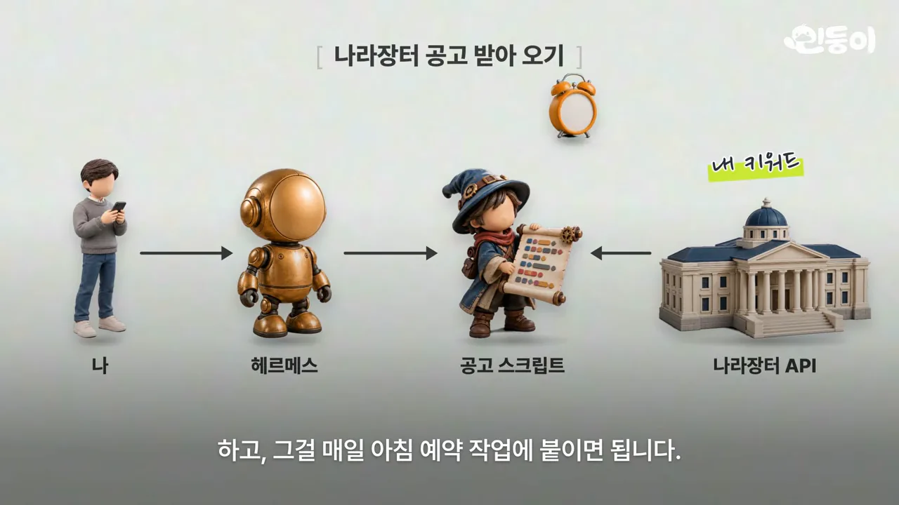
예약 작업에 두 가지를 더해 두면 알림이 깔끔해져요. 할 일에 '새 공고가 없으면 대괄호로 감싼 [SILENT]라고만 답하라'고 적어 두면 새 공고가 없는 날은 알림을 보내지 않아요. 어제 보낸 공고를 또 받기 싫으면 continuity 옵션을 켜 두세요. 실행할 때마다 지난번에 보낸 결과를 같이 보고 일해요.
이렇게 하나씩 붙여 가면 아침엔 일정과 메일 요약, 새 입찰 공고, AI 소식을 받아 보고, 낮엔 휴대폰으로 조사를 맡기고 코드 수정도 넘겨 둘 수 있어요. 발표자는 이걸 '개인 비서가 하나 생기는 것'이라고 불러요.
막혔을 때, 그리고 안전
하다가 막히면 일단 헤르메스에게 그대로 물어보세요. 자기 공식 문서를 읽는 스킬이 있어서, 오류 문구를 붙여 넣고 왜 이러냐고 물으면 원인을 찾아 줘요. 그래도 안 되면 터미널 명령 두 개를 기억해 두면 돼요. 슬라이드에서 진찰받는 로봇 옆에 'hermes doctor'와 '설치·연결' 메모가 붙어 있는 게 첫 번째 명령이에요.
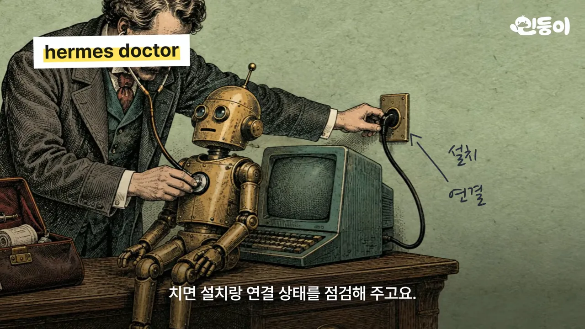
| 상황 | 할 것 |
|---|---|
| 오류가 났어요 | 오류 문구를 헤르메스에게 붙여 넣고 원인을 물어요 |
| 그래도 안 돼요 | hermes doctor로 설치와 연결 상태를 점검해요 |
| 메신저에서 답이 없어요 | hermes gateway restart로 게이트웨이부터 다시 시작해요 |
안전 수칙도 세 가지예요.
- 토큰과 API 키는 비밀번호나 마찬가지예요. 화면 공유나 캡처에 한 번이라도 나왔으면 바로 새로 발급받아요.
- 허용 목록엔 나만 둬요.
- 헤르메스는 내 컴퓨터에서 돌지만 대화 내용은 내가 연결한 모델 회사로 가요. 회사 자료를 넣을 땐 회사 규정부터 확인해요.
오늘 해 볼 한 가지
처음에 설정할 게 많아 보여도, 한 번 해 두면 그다음부터는 시킬 일을 다듬는 게 대부분이에요. 발표자가 권하는 첫걸음은 이래요. 설치하고 봇 하나를 만들어서, 화면에 적힌 '내 관심 분야 소식 세 개만 링크랑 같이 정리해 줘'를 예약 작업으로 걸어 보는 거예요.